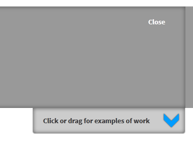
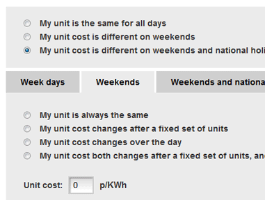
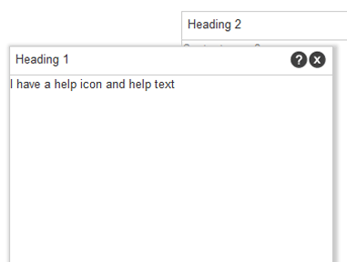

jQuery UI
I have used jQuery UI for the creation of many components...
-

Draggable content draw
As used on this page, above
-

Tabs
Used to hide/show content on a form
-

Drag and drop widgets
Grid of widgets that are draggable/droppable